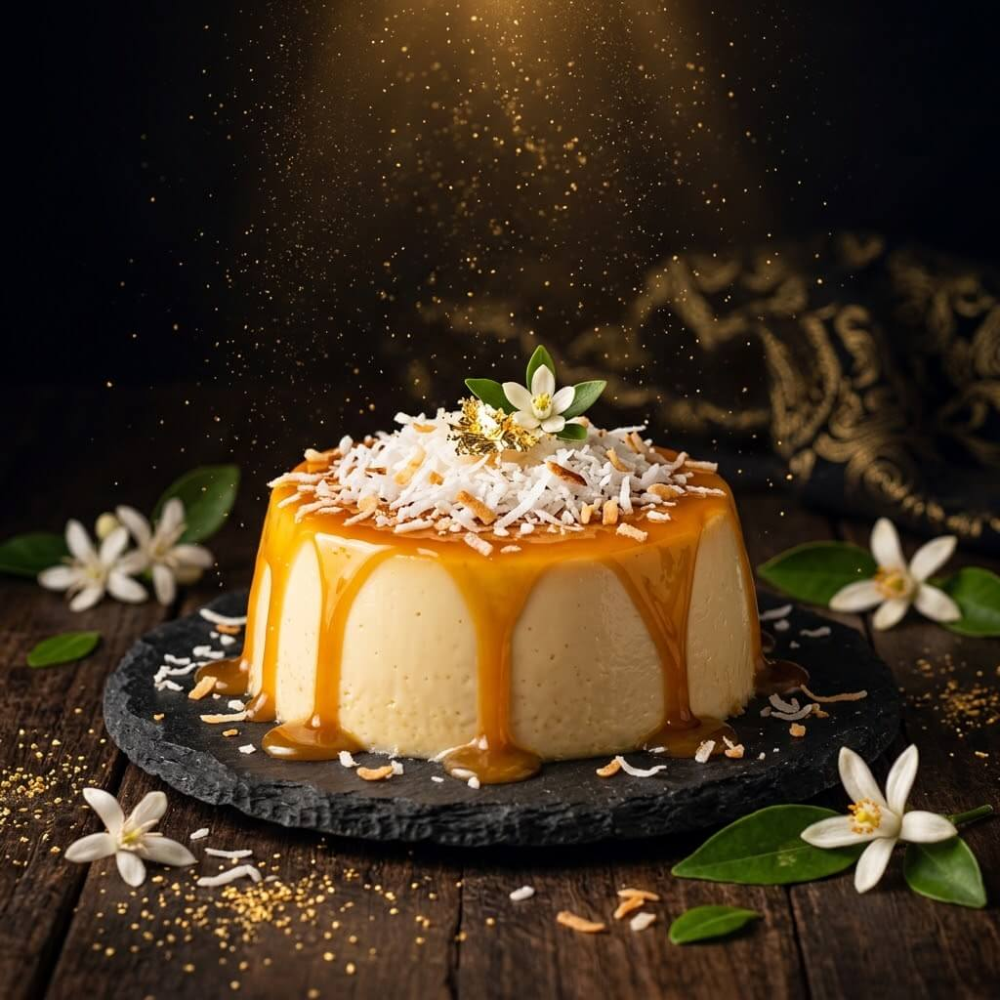

La web desapareció
Nuestro dominio dejó de responder. El hosting decía que no existía ninguna cuenta con ese nombre.
... o eso es lo que alguien quiere que creas.
Haz clic para iniciar la recuperación
● SISTEMA RESTAURADO // SANTO DOMINGO, RD
El 12 de marzo nuestra web, redes y clientes desaparecieron de Internet. Hoy Miel & Morir Soñando renace con bizcochos artesanales, brownies, postres fríos y un sistema de pedidos a prueba de borrados.
// ARCHIVO_001 · EXPEDIENTE DEL INCIDENTE
La noche del 12 de marzo, nuestra página web, nuestras redes sociales y hasta nuestro correo desaparecieron. Los clientes nos buscaban y no encontraban nada. Era como si nunca hubiéramos existido.
Nuestro dominio dejó de responder. El hosting decía que no existía ninguna cuenta con ese nombre.
Instagram y Facebook aparecían como "perfil no disponible". Perdimos miles de seguidores de la noche a la mañana.
Encontramos un USB en la oficina. Dentro, un solo archivo de texto: "Tu negocio ha sido borrado de la existencia digital. Si quieres recuperarlo, deberás reinventarlo."
// ARCHIVO_004 · NUESTRO COMPROMISO
Nos borraron una vez y aprendimos la lección. Estas son las garantías que damos a cada cliente que confía en Miel & Morir Soñando.
Si no llegamos en la fecha que acordamos, tu próximo pedido va por nuestra cuenta. Así de simple.
Todo se hornea el día de la entrega. Si algo no sabe como esperabas, te devolvemos tu dinero.
WhatsApp, web, redes y teléfono: cuatro canales para encontrarnos cuando necesites hacer un pedido.
// HORNEADOS HOY
Los postres que nos hicieron famosos, los que los clientes pidieron durante los 14 días que estuvimos desaparecidos.
Bañado en miel pura dominicana, con merengue y cereza.
RD$ 1,200
Chocolate 70%, nueces y un toque de sal marina.
RD$ 350

Cremoso, con coco fresco y caramelo artesanal.
RD$ 500
6 mini postres surtidos, perfecta para regalar.
RD$ 800
// VOCES DE NUESTROS CLIENTES
Cuando desaparecimos, nuestros clientes se volvieron detectives. Estos son algunos mensajes que nos llegaron por WhatsApp.
"Los llamé por días sin respuesta. Pensé que habían cerrado. Cuando volvieron, pedí 3 bizcochos para celebrar."
— Yamilé P., Zona Colonial
"Los brownies son otro nivel. Ese detalle de la sal marina los hace adictivos. Mi familia los pide cada domingo."
— Roberto M., Naco
"Me encantó que volvieran con web propia y todo. Ahora pedir es mucho más fácil que por WhatsApp."
— Carla D., Piantini
¡Hola! Soy Miel 🐝 ¿Qué postre se te antoja hoy?